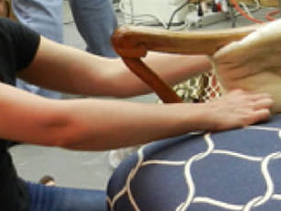
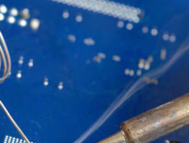

Welcome
Educational access and lifelong learning opportunities.
Educational access and lifelong learning opportunities.

Watercolor (American English) or watercolour (British English; see spelling differences), also aquarelle (French loanword), a diminutive of the Latin for water, is a painting method in which the paints are made of pigments suspended in a water-based solution. Watercolor refers to both the medium and the resulting artwork. The traditional and most common support—material to which the paint is applied—for watercolor paintings is paper. Other supports include papyrus, bark papers, plastics, vellum, leather, fabric, wood and canvas. Watercolor paper is often made entirely or partially with cotton, which gives a good texture and minimizes distortion when wet.[1] Watercolors are usually translucent, and appear luminous because the pigments are laid down in a pure form with few fillers obscuring the pigment colors. Watercolors can also be made opaque by adding Chinese white. In East Asia, watercolor painting with inks is referred to as brush painting or scroll painting. In Chinese, Korean and Japanese painting it has been the dominant medium, often in monochrome black or browns.[clarification needed] India, Ethiopia and other countries have long watercolor painting traditions as well.[citation needed] Fingerpainting with watercolor paints originated in mainland China.
Oil painting is the process of painting with pigments with a medium of drying oil as the binder. Commonly used drying oils include linseed oil, poppy seed oil, walnut oil, and safflower oil. The choice of oil imparts a range of properties to the oil paint, such as the amount of yellowing or drying time. Certain differences, depending on the oil, are also visible in the sheen of the paints. An artist might use several different oils in the same painting depending on specific pigments and effects desired. The paints themselves also develop a particular consistency depending on the medium. The oil may be boiled with a resin, such as pine resin or frankincense, to create a varnish prized for its body and gloss. Although oil paint was first used for Buddhist paintings by Indian and Chinese painters in western Afghanistan sometime between the fifth and tenth centuries,[1] it did not gain popularity until the 15th century. Its practice may have migrated westward during the Middle Ages. Oil paint eventually became the principal medium used for creating artworks as its advantages became widely known. The transition began with Early Netherlandish painting in Northern Europe, and by the height of the Renaissance oil painting techniques had almost completely replaced the use of tempera paints in the majority of Europe. In recent years, water miscible oil paint has come to prominence and, to some extent, replaced traditional oil paint. Water-soluble paints contain an emulsifier that allows them to be thinned with water rather than paint thinner, and allows very fast drying times (1–3 days) when compared with traditional oils (1–3 weeks).
Ink wash painting, also known as literati painting, is an East Asian type of brush painting of Chinese origin that uses black ink—the same as used in East Asian calligraphy—in various concentrations. For centuries, this form of Chinese art was practiced by highly educated scholar gentlemen or literati. Names used in the cultures concerned include: in Chinese shuǐ mò huà (水墨畫), in Japanese sumi-e (墨絵) or suibokuga (水墨画?), in Korean sumukhwa (수묵화), and in Vietnamese tranh thuỷ mặc (幀水墨).

MS-DOS (/ˌɛmɛsˈdɒs/ EM-es-DOSS; acronym for Microsoft Disk Operating System) is a discontinued operating system for x86-based personal computers mostly developed by Microsoft. Collectively, MS-DOS, its rebranding as IBM PC DOS, and some operating systems attempting to be compatible with MS-DOS, are sometimes referred to as "DOS" (which is also the generic acronym for disk operating system). MS-DOS was the main operating system for IBM PC compatible personal computers during the 1980s and the early 1990s, when it was gradually superseded by operating systems offering a graphical user interface (GUI), in various generations of the graphical Microsoft Windows operating system. MS-DOS resulted from a request in 1981 by IBM for an operating system to use in its IBM PC range of personal computers.[7][8] Microsoft quickly bought the rights to 86-DOS from Seattle Computer Products,[9] and began work on modifying it to meet IBM's specification. IBM licensed and released it in August 1981 as PC DOS 1.0 for use in their PCs. Although MS-DOS and PC DOS were initially developed in parallel by Microsoft and IBM, the two products diverged after twelve years, in 1993, with recognizable differences in compatibility, syntax, and capabilities. During its life, several competing products were released for the x86 platform,[10] and MS-DOS went through eight versions, until development ceased in 2000.[11] Initially MS-DOS was targeted at Intel 8086 processors running on computer hardware using floppy disks to store and access not only the operating system, but application software and user data as well. Progressive version releases delivered support for other mass storage media in ever greater sizes and formats, along with added feature support for newer processors and rapidly evolving computer architectures. Ultimately it was the key product in Microsoft's growth from a programming languages company to a diverse software development firm, providing the company with essential revenue and marketing resources. It was also the underlying basic operating system on which early versions of Windows ran as a GUI. It is a flexible operating system, and consumes negligible installation space.
San Diego Continuing Education commits to student success and community enrichment by providing accessible, equitable, and innovative quality education and support services to diverse adult learners in pursuit of lifelong learning, training, career advancement, and pathways to college.